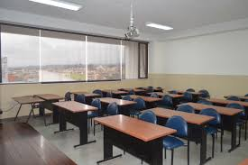

← Volver
Bienvenido a la UTA
Salones y aulas de la Universidad Técnica De Ambato
¡Explora nuestros salones y aulas!
Facilitar la instrucción académica: Son los lugares donde se llevan a cabo las clases teóricas, en las que los docentes presentan los contenidos y explican conceptos clave de las diferentes disciplinas.
Fomentar el aprendizaje colaborativo: En las aulas, los estudiantes pueden participar en actividades de grupo, debates, presentaciones y discusiones que promueven el trabajo en equipo y el intercambio de ideas.
Desarrollo de habilidades prácticas: Algunas aulas están diseñadas para actividades prácticas, como laboratorios de ciencias, salas de informática o aulas de arte, donde los estudiantes aplican los conocimientos adquiridos en situaciones reales o simuladas.
